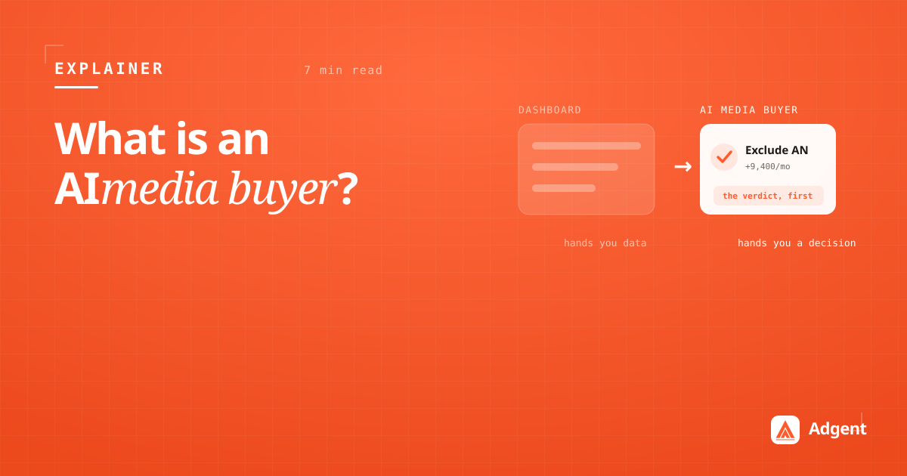

What is an AI media buyer?
The term is new, the job isn't. An AI media buyer reads your ad accounts like a senior strategist, tells you what to do and why, and makes the change on your approval — not a dashboard with a chatbot bolted on.

Search "AI media buyer" and you'll find two kinds of answer: hype that promises to "replace your team," and tools that are really just dashboards with a chat box. Neither describes the job. So here's a plain-language definition, and an honest map of what the category actually contains.
The short definition
An AI media buyer is software that does the reasoning part of a media buyer's job. It reads your ad accounts across platforms, reasons about how they're built — budget structure, placements, audiences, creative, attribution — and commits to a conclusion about what to change and why. Then it prepares the change and executes it when you approve.
The word that matters is reasoning. A media buyer's value was never pulling the numbers; it was knowing which number matters today, why it moved, and what to do about it. That judgment is the thing an AI media buyer automates — the click at the end is the easy part.
A dashboard hands you data. An AI media buyer hands you a decision.
What it is not
The category gets muddy because three very different things get called "AI for ads." They're worth separating:
- Not a reporting dashboard. A dashboard renders your data beautifully and leaves the analysis to you. The decision is still yours to make, alone, at 8am.
- Not platform automation. Meta Advantage+ and Google Performance Max are the platforms' own AI — and they optimize toward the platform's auction, not your margin. An AI media buyer sits on your side of the table.
- Not a rules engine. "If CPA > X, pause" is automation without judgment. It fires on a threshold; it can't tell you why CPA moved or whether pausing is the right call.
What a real one does, day to day
Strip away the marketing and the job breaks into three layers — awareness, conversation, and execution. A capable AI media buyer runs all three as one loop:
1. It watches — and writes the verdict first
Overnight it reads every account across Meta, Google and TikTok as one book, builds baselines, and detects what changed. In the morning you get a brief ranked by impact, not a wall of charts. This is the same principle behind why we lead with the verdict: conclusion first, evidence underneath.
2. It answers — in plain language
You ask "why did Meta ROAS drop yesterday?" and get a strategist's answer with evidence, not a chart to decode. That includes the awkward truths a dashboard glosses over — like a blended ROAS hiding a placement leak, or a number that's still inside the attribution window and shouldn't be trusted yet.
3. It acts — on your approval
When a fix is ready, it's a prepared action you approve with one message. Nothing writes to a live account on its own. Read-only by default is the whole point: the judgment is automated, the control stays with you.
Why the honest version matters
The reason to be careful about the definition is trust. An AI media buyer touches real client money, so the version worth using is the one that knows the limits of its own numbers — it flags a metric it can't stand behind instead of printing a confident figure. "Impressive but wrong" is worse than useless when there's spend on the line.
That's the bar we build Adgent to: a senior analyst's judgment across Meta, Google and TikTok, honest about what it can and can't measure, executing only on your word. If you want to see what it would say about a real account, request a demo — fifteen minutes, connected read-only.